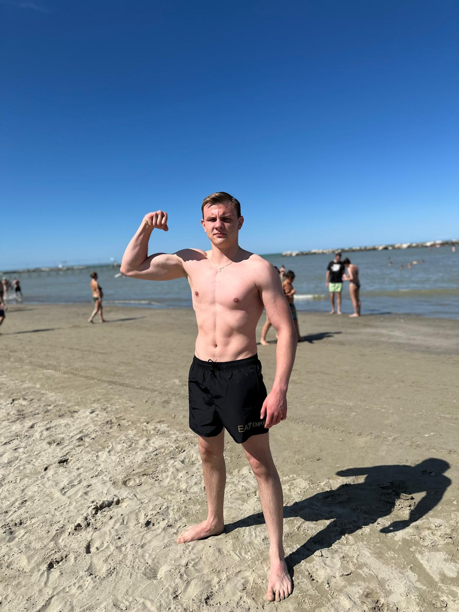
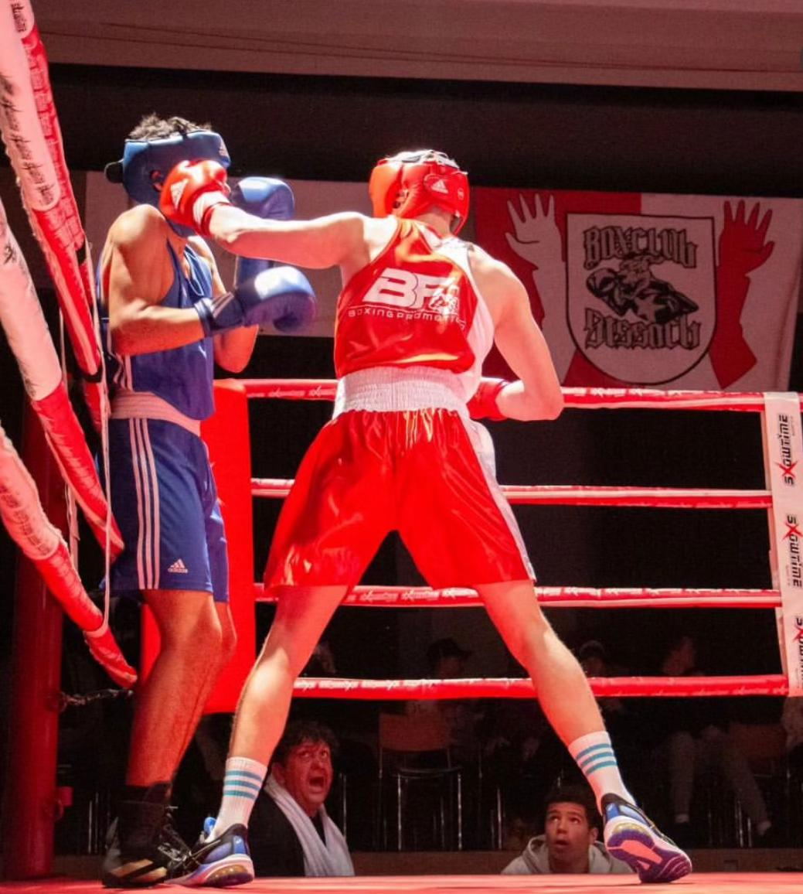

Software Engineering & AI
Also known as Tony
I am a student at the Informatik Mittelschule Baden, specialising in software engineering and the strategic application of generative AI technologies. My focus is on leveraging cutting-edge tools to optimise development workflows, accelerate research, and build solutions that are as intelligent as they are efficient.
From an early age, technology held an almost magnetic fascination for me. Long before I could articulate what a computer actually was, I was instinctively drawn to screens, devices, and everything electronic. I spent hours experimenting on my parents' phones and computers, driven by a relentless curiosity about how these machines functioned beneath the surface. Platforms like Scratch were among my first encounters with the logic of programming, and building my first rudimentary websites ignited something that has never quite gone out.
When the time came to decide my path after completing the Oberstufe, there was no hesitation. Computer science was not merely a sensible career option; it was the only direction that felt genuinely right. I enrolled at the Informatik Mittelschule Baden, where I have been channelling my passion into a rigorous academic curriculum. The school has provided me with a robust foundation in software engineering principles and the intellectual environment to explore what truly interests me most.
My primary interests lie at the intersection of artificial intelligence and software engineering, particularly in the development of innovative, technology-driven solutions that address real-world challenges. I am especially drawn to the transformative potential of generative AI, not as a novelty, but as a serious instrument for building smarter workflows, enhancing developer productivity, and redefining what is possible in problem-solving. Every project I undertake is an opportunity to push that boundary a little further.
View Projects on GitHubSport is not simply a pastime for me; it is a fundamental part of who I am. I run, swim, lift weights, and practise calisthenics, pushing my body to its limits on a consistent basis. There is something deeply compelling about testing what the human body can endure and exceed. I am drawn to the discipline, the discomfort, and the incremental progress that serious athletic training demands. I harbour a number of ambitious projects and aspirations in the realm of sport, with a particular focus on endurance disciplines. The mental fortitude that endurance sports cultivate is, in many ways, just as valuable to me as the physical conditioning.


For several years, I competed in amateur boxing at a high level. I participated in the Swiss Championship and the Deutsch-Tessiner Championship, representing team Boxgemeinschaft Ostschweiz, with whom I experienced the notable achievement of defeating team Vorarlberg from Austria at the Bodenseecup 2023. Boxing at a competitive level demands far more than physical ability; it requires tactical acuity, psychological resilience, and an uncompromising work ethic, qualities that extend far beyond the ring.
Today, I continue to train boxing primarily as a discipline and pursuit I genuinely love, and I also coach the youth boxing programme at BF Boxing Promotion in Klingnau, passing on the knowledge and passion that the sport has given me.
Whether you have an interesting project in mind, a question, or simply want to connect, feel free to reach out. I am always open to meaningful conversations.